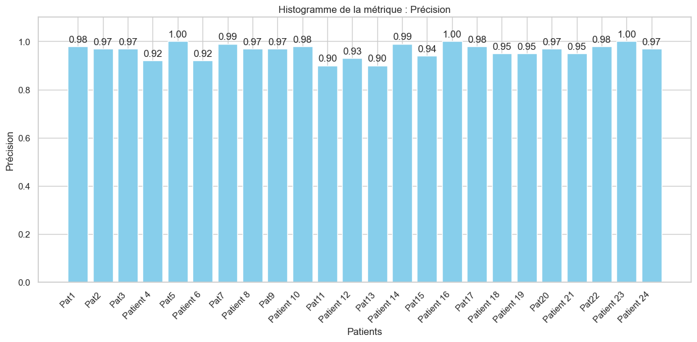
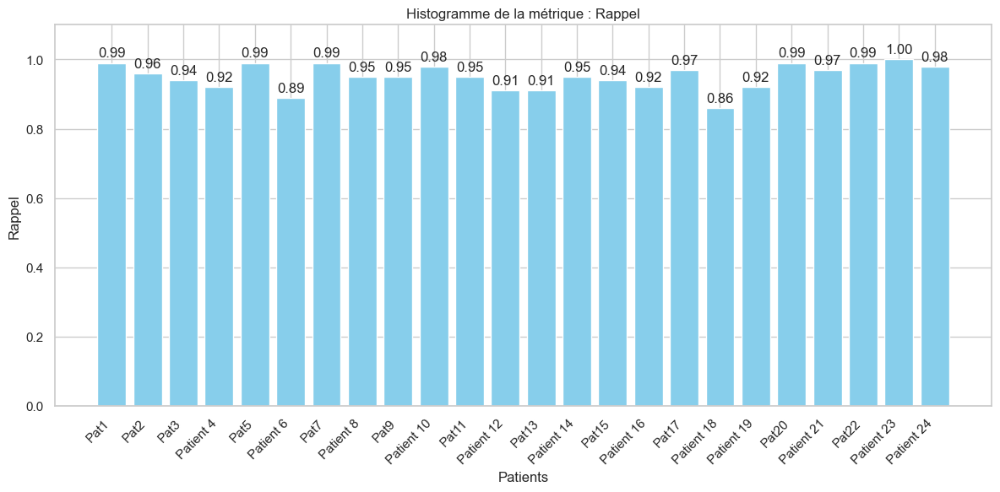
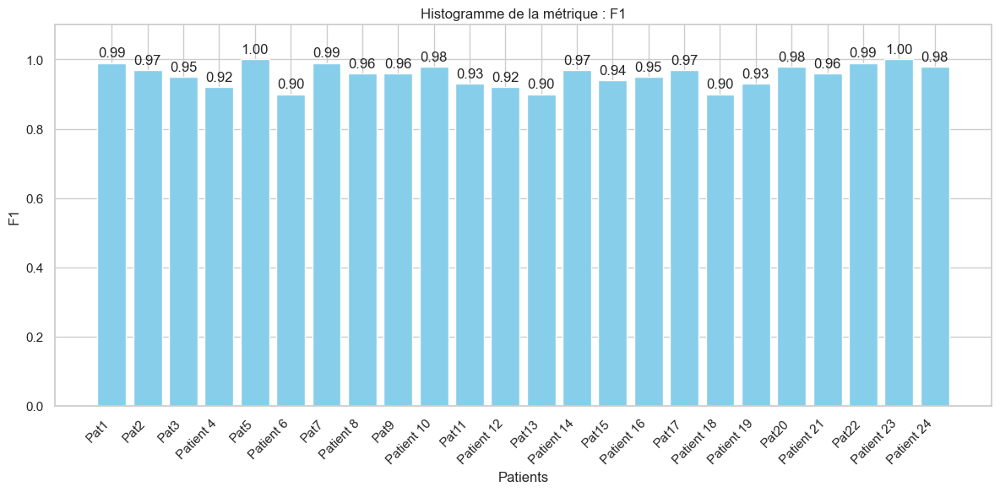
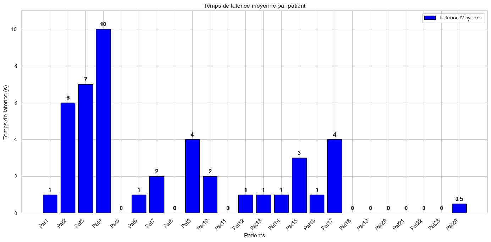
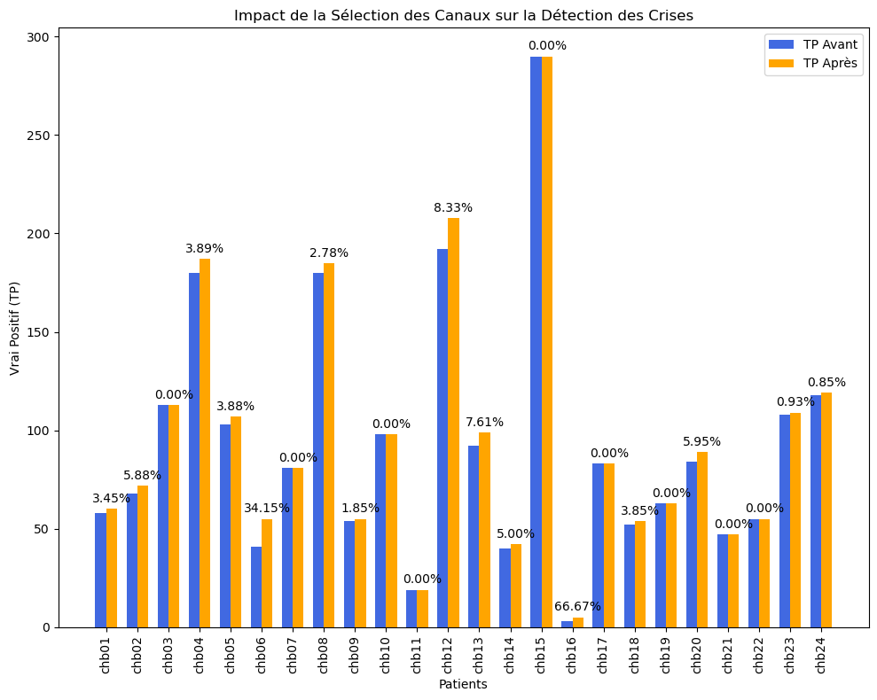

Le problème
Repérer automatiquement les crises d'épilepsie dans des enregistrements EEG de 23 canaux. Rater une crise coûte plus cher qu'une fausse alerte : le rappel compte donc plus que la précision seule.
Ma démarche
- FiltrageCoupe-bande 50 Hz, passe-bande 0,5 à 30 Hz, référence moyenne commune
- Fenêtres4 s avec un pas de 1 s, étiquetées crise si plus de 60 % chevauchent une crise
- CaractéristiquesTemps, fréquence, ondelettes et dynamique non linéaire
- CanauxBoruta garde les canaux utiles pour chaque patient
- ModèleRandom Forest par patient, seuil réglé pour le rappel
- Caractéristiques temporelles : variance, kurtosis, écart interquartile, longueur de ligne, mobilité de Hjorth.
- Caractéristiques fréquentielles : puissance par bande, ondelettes discrètes (db4) et continues (Morlet).
- Dynamique du signal : entropies de Shannon et de permutation, exposant de Hurst, dimension de corrélation.
- Un modèle par patient, car la forme d'une crise varie beaucoup d'une personne à l'autre.
Résultats
- Précision
- 99,5 %
- Rappel
- 95,3 %
- Score F1
- 97,5 %
- Exactitude
- 96,63 %
- Latence moyenne
- 1,85 s
- Fausses détections
- 2,29 %
- Crises détectées
- 31 / 32
- Patients
- 24
Valeurs moyennes sur les 24 patients. Sur les 32 crises du jeu de test, une seule n'a pas été détectée (patient 15). La latence est le temps entre le début de la crise et sa détection.






Limites
Un modèle par patient, évalué sur des fichiers contenant des crises : les résultats ne se généralisent pas tels quels à un enregistrement continu ni à un nouveau patient.
Le jeu de test contient peu de crises par patient (de 1 à 4) : le rappel repose donc sur un petit nombre d'événements.
Les fausses détections varient selon les patients : jusqu'à 9,5 % pour le patient 13.